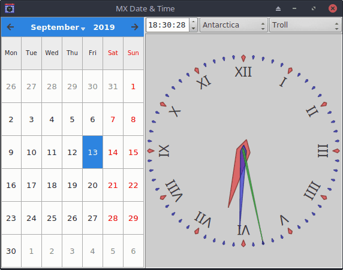

This application can also be used as a calendar and clock.
This mode is activated if MX Date & Time is run without root privileges. Only the basic calendar and clock controls are displayed, without tabs at the top or buttons at the bottom.

It is still possible to change the date and time displayed, and changing the time zone will update the displayed date and time. This effect can be used to determine the date and time in a different zone, or to calculate the difference between zones.
Changes cannot be applied to the system or hardware clock in Slender Mode. This allows MX Date & Time to be used as a clock or time zone calculator without the risk of affecting the system.
MX Linux 23 - July 30, 2023